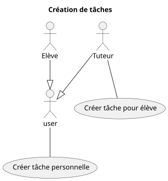
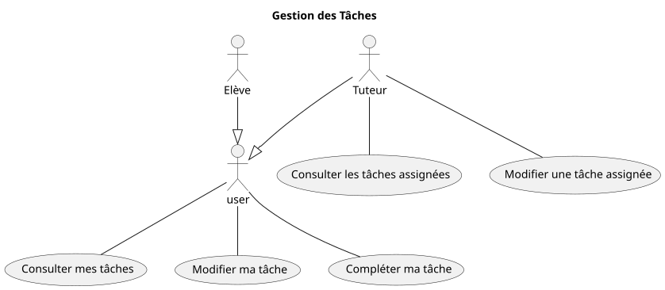

Domaine : tâches
Création des tâches

Gestion des tâches

Fonctionnalité: Créer une tâche personnelle
En tant qu'utilisateur connecté à mon espace personnel
Je veux créer une tâche personnelle
Afin de m'organiser
Ou découper une tâche assignée trop grosse en sous-tâches
Scénario: Créer une tâche personnelle avec des données valides
Etant donné que je suis sur le formulaire de création de tâches
Et que j'ai complété les champs obligatoires
Lorsque je valide le formulaire
Alors la tâche est créée pour moi
Et la tâche est visible dans mon calendrier
Scénario: Refus avec des données obligatoires manquantes
Etant donné que je suis sur le formulaire de création de tâches
Mais que je n'ai pas complété toutes les données obligatoires
Lorsque je valide le formulaire
Alors la tâche n'est pas créée
Et les données obligatoires sont mises en valeur
Et je suis invité à compléter les données manquantes
Fonctionnalité: Créer une tâche pour l'élève
En tant que tuteur connecté connecté à mon espace personnel
Je veux créer une nouvelle tâche à réaliser pour un élève que j'accompagne
Afin qu'il ait des objectifs à acomplir pour le prochain rendez-vous
Scénario: Créer une tâche pour l'élève avec des données valides
Etant donné que je suis sur le formulaire de création de tâches
Et que j'ai choisi un étudiant
Et que j'ai complété les champs obligatoires
Lorsque je valide le formulaire
Alors la tâche est créée pour l'élève
Et la tâche est visible dans mon calendrier
Et la tâche est visible dans le calendrier de l'élève
Et un email de notification est envoyé à l'élève
Scénario: Refus avec des données obligatoires manquantes
Etant donné que je suis sur le formulaire de création de tâches
Et que j'ai choisi un étudiant
Mais que je n'ai pas complété toutes les données obligatoires
Lorsque je valide le formulaire
Alors la tâche n'est pas créée
Et les données obligatoires sont mises en valeur
Et je suis invité à compléter les données manquantes
Fonctionnalité: Consulter mes tâches
En tant qu'utilisateur connecté à mon espace personnel
Je veux voir toutes mes tâches
Afin de ne pas en oublier et m'organiser pour les compléter
Scénario: Consulter de mes tâches
Etant donné que j'ai 3 tâches assignées par mon tuteur non réalisées
Et que j'ai 4 tâches personnelles non réalisées
Et que j'ai 2 tâches personnelles déjà réalisées
Lorsque je clique sur "consulter mes tâches"
Alors je vois la liste de mes tâches
Et mes 3 tâches assignées par mon tuteur, non réalisées, sont affichées
Et sont mises en valeur
Et mes 4 tâches personnelles, non réalisées, sont affichées
Et sont mises en valeur différement
Et mes 2 tâches réalisées sont affichées
Scénario: Consulter mes tâches, si aucune
Etant donné que je n'ai aucune tâche
Lorsque je clique sur "consulter les tâches"
Alors aucune tâche n'est affichée
Et un message me prévient que j'ai aucune tâche
Fonctionnalité: Modifier ma tâche
En tant qu'utilisateur connecté à mon espace personnel
Je veux modifier une tâche personnelle
Afin d'en corriger le titre
Scénario: Modifier ma tâche
Etant donné que j'ai au moins une tâche personnelle
Et que je suis sur le formulaire de modification
Et que j'ai modifié le titre
Lorsque je valide le formulaire
Alors le titre de la tâche est modifiée
Fonctionnalité: Compléter ma tâche
En tant qu'utilisateur connecté à mon espace personnel
Je veux marquer "complétée" une tâche
Afin de m'organiser
Et ne voir que les tâches restants à faire
Scénario: Complétion d'une tâche
Etant donné que je suis sur la tâche sélectionnée
Lorsque que je clique sur "complétée"
Alors la tâche est marquée comme complétée
Et la tâche n'est plus visible dans le calendrier
Fonctionnalité: Consulter les tâches assignées
En tant que tuteur connecté à mon espace personnel
Je veux voir toutes les tâches assignées aux élèves
Afin de suivre leur progression
Scénario: Consulter les tâches assignées
Etant donné que j'ai 3 tâches assignées à des élèves
Et que deux sont complétées par les élèves
Lorsque je clique sur "Consulter les tâches assignées"
Alors je vois la liste des 3 tâches assignées
Et la tâche non complétée est mise en valeur
Scénario: Consulter les tâches assignées, si aucune
Etant donné que je n'ai aucune tâche assignée à un élève
Lorsque je clique sur "Consulter les tâches assignées"
Alors aucune tâche assignée n'est affichée
Et un message me prévient que j'ai assigné aucune tâche
Fonctionnalité: Modifier une tâche assignée
En tant que tuteur connecté à mon espace personnel
Je veux modifier une tâche assignée à un élève
Afin d'en corriger le titre
Scénario: Modifier une tâche assignée
Etant donné que j'ai au moins une tâche assignée à un élève
Et que je suis sur le formulaire de modification
Et que j'ai modifié le titre
Lorsque je valide le formulaire
Alors le titre de la tâche est modifiée
Et un email de notification est envoyé à l'élève